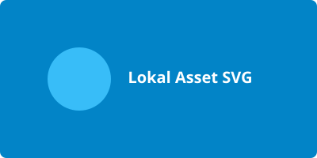

Peran Atribut alt:

Jika berkas gambar rusak atau tidak ditemukan, teks alt akan tampil sebagai pengganti:
![[Teks Fallback]: Foto pemandangan pegunungan saat fajar](assets/gambar_tidak_ada.png)
Memahami fungsi teks alternatif (alt text) untuk aksesibilitas screen reader dan kondisi koneksi terputus.

Jika berkas gambar rusak atau tidak ditemukan, teks alt akan tampil sebagai pengganti: